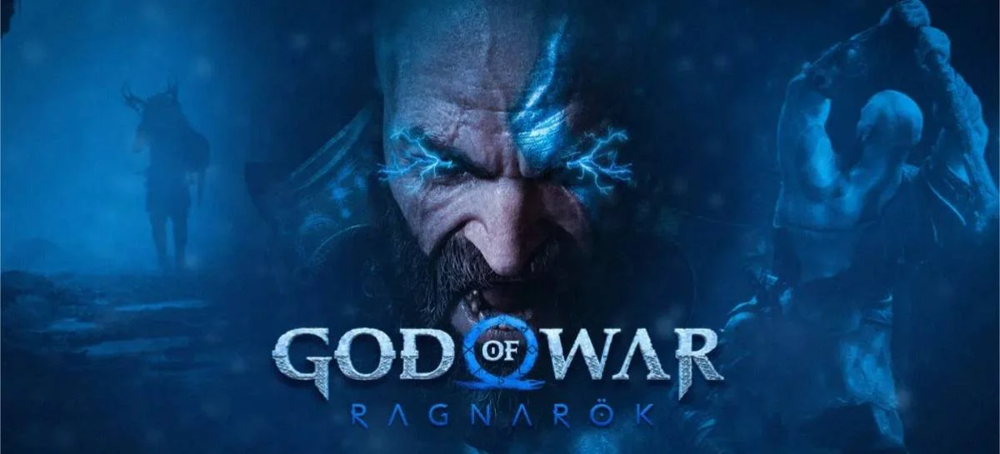

Os jogos tiveram uma grande evolução de uns anos para ca, tendo graficos melhorados,
jogabilidade mais confortavel, alguns trabalhando a fisica de uma forma mais realista, etc.
No momento existe uma jogo que esta dando oque falar, God Of War, conhecido como "GOW" para
os "intimos", no dia 09/11/2022 (novembro) foi lançado mais um jogoda franquia completando
5 jogos ao todo contando a historia de Katos,um espartano que se tornou o deus da guerra e
apos uma traição de Ares, o antigo deus da guerra, fazendo Kratos matar a propria esposa e
filhos se rebelou contra os deuses da grecia. O primeiro que matou foi o proprio Ares assim
tomando seu posto de deus da guerra.
A saga do deus da guerra na grecia se encerra no 3° jogo mas por algum motivo, apartir do 4°
jogo ele se encontra mais velho e dentro da mitologia nordica enfrentando varias figuras
iconicas como Balder,irmão de Thor, entre outros.

No dia 9 de novembro de 2022 foi lançado mais um jogo dessa franquia, God of War Ragnarok,
pasando-se na mitologia nordica também igual ao GoW4, ele comoça com Kratos mais velho e seu
filho Atreus. A história desse jogo tem como base impedir o ragnarok que é o fim do mundo para
os nordicos. Nele Kratos e Atreus vão atras de tyr, deus da guerra para os gregos, para
ajudar Atreus na busca de saber quem é "loky" que bara os nordicos é o deus da trapaça mas
ele não tinha conhecimento justramente por ser um filho de um deus grego. Sua mãe era uma
gigante da mitologia nordica mas ela morreu antes de Atreus conhecela então conviveu apenas
com seu pai, um espartano que tem a cultura grega ecomo conhecimento principal e não sabia quase nada nordicos
